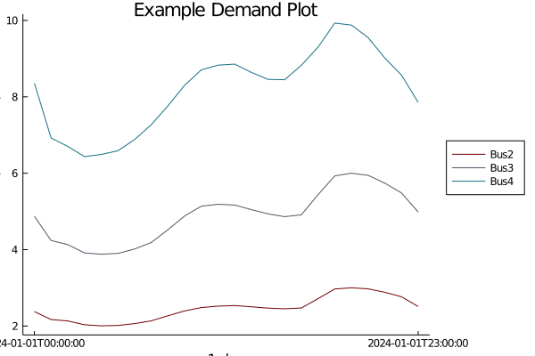
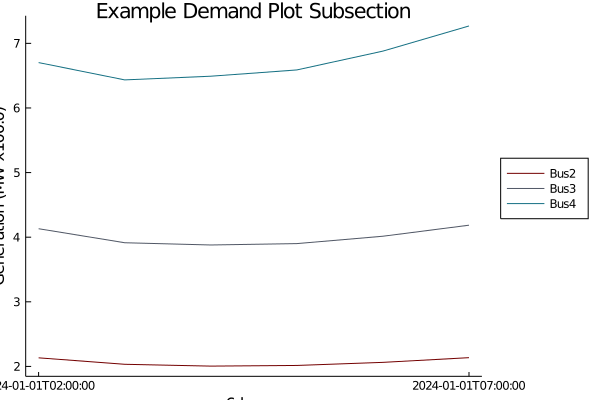

How to Make Forecast Plots
See How to set up plots to get started
using PowerGraphicsMake a plot of the reserves
plots = plot_reserves(results)

Make demand plots from results
plots = plot_demand(results)
Make demand plots from a system
plots = plot_demand(system)
Make demand plots from a Subsection of Time
initial_time = Dates.Date(2024, 01, 01, 02, 0, 0)
horizon = 6
plots = plot_demand(system; horizon = horizon, initial_time = initial_time)
Make Demand Plots by Power Systems DataType
sort by PowerLoad, Bus, System
plots = plot_demand(system; aggregate = System)
Make demand plots without interpolation between points (stair plot)
plots = plot_demand(system; stair = true)
Set different colors for the plots
colors = [:orange :pink :blue :red :grey]
plot_demand(system; seriescolor = colors)
Set a title
title = "Example Demand Plot with Title"
plot_demand(system; title = title)
For saving the plot with the PlotlyJS backend, you can set a different format for saving
plot_demand(system; save = path, format = "html")Default format for saving is png. Optional formats for saving include png, html, and svg.
This page was generated using Literate.jl.